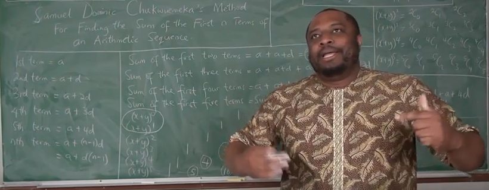

I greet you this day,
First: read the notes/eText.
Second: view the videos/multimedia resources.
Third: solve the solved examples and word problems.
Fourth: check your solutions with my thoroughly-explained solutions.
Comments, ideas, areas of improvement, questions, and constructive criticisms are welcome. You may contact me.
Thank you for visiting.
Samuel Dominic Chukwuemeka (Samdom For Peace) B.Eng., A.A.T, M.Ed., M.S
It's 2019
A family of the Dad, Mom, Daughter, Son
The son was not at home.
Daughter: Good morning Dad
Dad: Good morning little angel.
How are you?
Daughter: I am okay...but not really okay
Dad: What is the problem this time?
Daughter: I celebrate my birthday every year but my brother does not
It's been 3 years since we had his birthday
Why is that? ...speaking like an American lol
And I'm sure he has not joined Jehovah's witnesses
Dad: Where did you get your "smart mouth" from?
Daughter: From you, of course
Dad: No, you got your intelligence from me...
but you got your smart mouth from your Mom.
Daughter: Dad!
I am going to ask Mom why we do not celebrate Jude's birthday...
and I'm going to tell her what you said
She runs to her Mom
Daughter: Good morning Mom
Mom: Good morning my princess.
You are wonderful this morning.
Daughter: Hmmm...are you sure...cause I'm not
Mom: Come on, my dear; what's the problem?
Anyway, what should you say when you receive a complement?
Daughter: Thank you Mom.
What about Jude's birthday?
I celebrate my birthday every year.
But, what about my brother, Jude?
It's been many years since we celebrated his birthday.
I want us to celebrate his birthday every year.
Mom: My dear, your brother was born in a leap year
His birthday is on 29th February
Each leap year has 29 days rather than 28 days
A leap year comes up every four years
Your brother's birthday is like a sequence...every four years....
Bring it to Mathematics
It is a Sequence
An Arithmetic Sequence
where the common difference is 4
When was the last time we had Jude's birthday?
Daughter: In 2016
Mom: So, the next time would be...
Daughter: next year, 2020...
Mom: and ...
Daughter counts ...1, 2, 3, 4
Daughter: 2024, 2028, 2032,...
But, why?
What is a leap year?
And why does each leap year have 29 days?
And why should my brother's birthday fall on such a day?
You mean ...leap year ...year that ... "leaps like a frog"?
Mom: Interesting... well go and find out
I have no idea
Daughter: Well, you should know!
Mom: Excuse me...what a smart mouth?
Daughter: And by the way, Dad said I got my smart mouth from you
Mom: Did he really say that?
The daughter nodded
Daughter: Yes, he did
Mom: Do not mind your Dad. He is an as....
Dad has been listening to the interaction.
He interrupts...
Dad: Honey, what time do we need to go to the store?
Daughter: Lol...He called you honey...lol... that is what he does when he gets in trouble
She runs to the computer
The Dad goes to the Mom
Dad: Did you sign out of your email?
Mom: No, I did not.
Let us find a way to distract her
So, I can go and sign out.
We definitely do not want her to ask questions again from my email
Daughter was listening to the conversation but they did not realize
Daughter: I am not going to contact anyone this time
I just want to find out what both of you should have known
I want to find out the information about a leap year
Why do we have leap years?
Why does it have to be only February that is affected by leap years?
I just want my brother to celebrate birthday every year just like I do.
Mom and Dad: You are correct. We should know. Let's join you to find out.
For Algebra, PreCalculus, and Calculus Students
Students will:
(1.) Discuss sequences.
(2.) Identify the types of sequences.
(3.) Determine the nth term of an arithmetic sequence.
(4.) Determine the nth term of a geometric sequence.
(5.) Determine the sum of the n terms of an arithmetic sequence.
(6.) Determine the sum of the $n$ terms of a geometric sequence.
(7.) Determine the sum to infinity of an applicable geometric sequence.
(8.) Solve applied problems on arithmetic sequence.
(9.) Solve applied problems on geometric sequence.
(10.) Determine the nth term of an arithmetic sequence.
(11.) Determine the nth term of a quadratic sequence.
(12.) Determine the nth term of a triangular sequence.
(13.) Determine the nth term of a square sequence.
(14.) Determine the $nth$ terms of recursive sequences.
For Calculus Students
Students will:
(1.) Discuss series.
(2.) Identify the types of series.
(3.) Test for the convergence of series.
(4.) Test for the divergence of series.
(5.) Determine the convergence or divergence of series.
(6.) Calculate the sum to infinity of a convergent series.
sequences, series, arithmetic progression, geometric progression, arithmetic sequence, linear sequence, exponential sequence, geometric sequence, first term, common difference, common ratio, number of terms, general term, nth term, sum of terms, last term, sum to infinity, quadratic sequence, triangular sequence, Fibonacci sequence, recursive sequence, general sequence, arithmetic mean, geometric mean, convergent series, divergent series, first difference, second difference, linear expression, quadratic expression, linear function, quadratic function, linear equation, quadratic equation, summation, sigma notation, recurrence sequence, recurrence relation, recurrence equation, square sequence, initial conditions, first-order linear recurrence relation, second-order linear recurrence relation
A Sequence is an ordered list of items.
The items could be numbers, variables among others.
Each item in the sequence is known as the term or element of the sequence.
An Arithmetic Sequence or Arithmetic Progression or Linear Sequence is a sequence whose difference between consecutive terms is a constant value.
The common difference of an arithmetic sequence is the constant that is added to a term of an Arithmetic Sequence in order
to give the next term of that sequence.
A Geometric Sequence or Geometric Progression or Exponential Sequence is a sequence whose quotient between consecutive terms is a constant value.
The common ratio OR common quotient of a geometric sequence is the constant that is multiplied to a term of a Geometric Sequence in order
to give the next term of that sequence.
A Quadratic Sequence is defined as a sequence in which the highest exponent of the number of terms in the general term ($nth$ term) is two.
A Recursive Sequence or Recurrence Sequence is a sequence in which each consecutive term is obtained from one or more previous
terms based on an equation/relation.
A Fibonacci Sequence is a sequence in which each successive term is obtained by
adding the two previous terms.
A Series also known as Infinite Series is the sum of all the terms of an infinite sequence.
An Arithmetic Sequence is a sequence in which each consecutive term is obtained by the
addition of a constant value to a previous term.
OR
An Arithmetic Sequence is a sequence whose difference between consecutive terms is a constant value.
It is also known as an Arithmetic Progression.
It is also known as a Linear Sequence.
Because it is also known as a Linear Sequence, one can also define it as a sequence in which
the highest exponent of the number of terms in the general term ($nth$ term) is one.
The next (succeeding) term of the sequence is found by adding a constant to the previous (preceeding) term
of that sequence.
That constant is known as the common difference.
So, the common difference is the constant that is added to a term of an Arithmetic Sequence in order
to give the next term of that sequence.
Example 1: In the sequence: $3, 10, 17, 24, ...$
First term, $a = 3$
Second term = $10$
Third term = $17$
Fourth term = $24$
Teacher: how did we obtain the:
second term from the first term?
third term from the second term?
fourth term from the third term?
$
2nd\:\: term - 1st\:\: term = 10 - 3 = 7 \\[3ex]
3rd\:\: term - 2nd\:\: term = 17 - 10 = 7 \\[3ex]
4th\:\: term - 3rd\:\: term = 24 - 17 = 7 \\[3ex]
$
So, we have a common difference ("common" because it is a constant value, "difference" because it is
the result of a subtraction procedure).
So, the common difference, $d = 7$
Teacher: Does it make sense?
What would be the fifth term?
Example 2: In the sequence: $-3, -10, -17, -24, ...$
First term, $a = -3$
Second term = $-10$
Third term = $-17$
Fourth term = $-24$
Teacher: how did we obtain the:
second term from the first term?
third term from the second term?
fourth term from the third term?
$
2nd\:\: term - 1st\:\: term = -10 - (-3) = -10 + 3 = -7 \\[3ex]
3rd\:\: term - 2nd\:\: term = -17 - (-10) = -17 + 10 = -7 \\[3ex]
4th\:\: term - 3rd\:\: term = -24 - (-17) = -24 + 17 = -7 \\[3ex]
$
Here, the common difference, $d = -7$
Teacher: What would be the fifth term?
What would be the seventieth term?
Student: That would be a lot of work
Is there an easier way to find it?
Teacher: yes of course! ☺☺☺
Back to Example 1 (as it would be easier to demonstrate what we want to do)
We already know that:
first term = $a$
common difference = $d$
So, we have:
$
1st\:\: term = a = 3 \\[3ex]
2nd\:\: term = 3 + 7 = 10 = a + d \\[3ex]
3rd\:\: term = 10 + 7 = 17 = a + d + d = a + 2d \\[3ex]
4th\:\: term = 17 + 7 = 24 = a + d + d + d = a + 3d \\[3ex]
$
Teacher: In that sense and using Algebra only (forget Arithmetic (the results/numbers) now),
because we want to come up with a formula
What are the:
$5th, 6th, 7th, 10th, nth$ terms?
$
5th\:\: term = a + 4d \\[3ex]
6th\:\: term = a + 5d = a + (6 - 1)d \\[3ex]
7th\:\: term = a + 6d = a + (7 - 1)d \\[3ex]
10th\:\: term = a + 9d = a + (10 - 1)d \\[3ex]
nth\:\: term = a + (n - 1)d \\[3ex]
nth\:\: term = a + d(n - 1) \\[3ex]
$
So, the $nth$ term of an Arithmetic Sequence is: $AS_n = a + d(n - 1)$
Teacher: Do you now understand how that formula was derived?
So, back to Example 2.
What is the seventieth term?
Back to Example 2:
$
AS_n = a + d(n - 1) \\[3ex]
a = -3 \\[3ex]
n = 70 \\[3ex]
d = -7 \\[3ex]
AS_{70} = -3 + -7(70 - 1) \\[3ex]
= -3 + -7(69) \\[3ex]
= -3 - 483 \\[3ex]
= -486 \\[3ex]
$
Now, that we have figured out the derivation of the formula for the $n$th term of an Arithmetic Sequence,
let us find out how the formula for the sum of the first $n$ terms of an Arithmetic Sequence is
derived.
Guess what? It was even asked in the National Senior Certificate (NSC) exam.
NSC Derive a formula for the sum of the first $n$ terms of an arithmetic sequence if the
first term of the sequence is $a$ and the common difference is $d$.
I shall begin with my method. I think it is much easier.
Besides, I think it is easier to recall.
Samuel Chukwuemeka's Method (SamDom For Peace Method) for Finding the Sum of the First n Terms of an Arithmetic Sequence
Published May 28, 2019 (05/28/2019)
My method connects Combinatorics with Algebra
Let us begin this way:
Sum of the First:
$
two\:\:terms = a + (a + d) = a + a + d = 2a + d \\[3ex]
three\:\:terms = a + (a + d) + (a + 2d) = a + a + d + a + 2d = 3a + 3d \\[3ex]
four\:\:terms = a + (a + d) + (a + 2d) + (a + 3d) = a + a + d + a + 2d + a + 3d = 4a + 6d \\[3ex]
$
Let us save some time ☺☺☺
The sum of the first five terms is the sum of the first four terms and the fifth term
The sum of the first six terms is the sum of the first five terms and the sixth term
The sum of the first seven terms is the sum of the first six terms and the seventh term
Sum of the First:
$
five\:\:terms = (4a + d) + (a + 4d) = 4a + d + a + 4d = 5a + 5d \\[3ex]
six\:\:terms = (5a + 5d) + (a + 5d) = 5a + 5d + a + 5d = 6a + 10d \\[3ex]
seven\:\:terms = (6a + 10d) + (a + 6d) = 6a + 10d + a + 6d = 7a + 16d \\[3ex]
$
In Summary
Sum of the First:
$
two\:\:terms = 2a + d \\[3ex]
three\:\:terms = 3a + 3d \\[3ex]
four\:\:terms = 4a + 6d \\[3ex]
five\:\:terms = 5a + 5d \\[3ex]
six\:\:terms = 6a + 10d \\[3ex]
seven\:\:terms = 7a + 16d \\[3ex]
$
Let us deviate to Pascal's Triangle and the Binomial Expansion
Let us write the first eight steps of the Pasca's Triangle
$
~~~~~~~~~~~~~~~~~~~~~~~~~~~~~~~~~~~~~~~~~~~~~1 \\[5ex]
~~~~~~~~~~~~~~~~~~~~~~~1~~~~~~~~~~~~~~~~~~~~~~~~~~~~~~~~~~~~~~~~~~~~1 \\[3ex]
~~~~~~~~~~~~~~~~~~1~~~~~~~~~~~~~~~~~~~~~~~~~~~~2~~~~~~~~~~~~~~~~~~~~~~~~~~~~~~~1 \\[3ex]
~~~~~~~~~~~~~1~~~~~~~~~~~~~~~~~~~~3~~~~~~~~~~~~~~~~~~~~~~~~~~~3~~~~~~~~~~~~~~~~~~~~~~~~~~~1 \\[3ex]
~~~~~~~~1~~~~~~~~~~~~~~~~~~~~~4~~~~~~~~~~~~~~~~~~~~~~~6~~~~~~~~~~~~~~~~~~~~~~~~~~~4~~~~~~~~~~~~~~~~1 \\[3ex]
~~~~1~~~~~~~~~~~~~5~~~~~~~~~~~~~~~~~~~~~~~10~~~~~~~~~~~~~~~~~~~~~~~~~~10~~~~~~~~~~~~~~~~~~~~~5~~~~~~~~~~~~~1 \\[3ex]
$
Let us compare the coefficients of $a$ and $d$ with the coefficients in the Pascal's Triangle
Forget the $1's$ in the Pascal's Triangle
Forget the first two steps in the Pascal's Triangle
Why?
The first step in the Pascal's Triangle are the coefficients of the expansion $(x + y)^0$
The second step in the Pascal's Triangle are the coefficients of the expansion $(x + y)^1$
So, we do not need those steps.
Let us begin with the third step in the Pascal's Triangle
The third step in the Pascal's Triangle are the coefficients of the expansion $(x + y)^2$
Compare the coefficients of $a$ and $d$ in the Sum of the first two terms of an Arithmetic Sequence with the second and third coefficients of the expansion $(x + y)^2$ in the Pascal's Triangle
Compare the coefficients of $a$ and $d$ in the Sum of the first three terms of an Arithmetic Sequence with the second and third coefficients of the expansion $(x + y)^3$ in the Pascal's Triangle
Compare the coefficients of $a$ and $d$ in the Sum of the first four terms of an Arithmetic Sequence with the second and third coefficients of the expansion $(x + y)^4$ in the Pascal's Triangle
What do you notice?
The coefficients are the same
Recall that the coefficients in the Pascal's Triangle: (as explained in the video link)
In the expansion of $(x + y)^1$ is $C(1, 0)$ and $C(1,1)$
In the expansion of $(x + y)^2$ is $C(2, 0)$, $C(2, 1)$, and $C(2, 2)$
In the expansion of $(x + y)^3$ is $C(3, 0)$, $C(3, 1)$, $C(3, 2)$, and $C(3, 3)$
In the expansion of $(x + y)^4$ is $C(4, 0)$, $C(4, 1)$, $C(4, 2)$, $C(4, 3)$, and $C(4, 4)$
$
C(3, 1) = 3 \\[3ex]
C(4, 1) = 4 \\[3ex]
C(n, 1) = n \\[3ex]
Why?\:\: How? \\[3ex]
Based\:\: on\:\:the\:\:Combinations\:\:Formula \\[3ex]
n! = n * (n - 1) * (n - 2) * (n - 3) * ... * 1 \\[3ex]
n! = n * (n - 1)! \\[3ex]
n! = n * (n - 1) * (n - 2)! \\[3ex]
C(n, r) = \dfrac{n!}{(n - r)! r!} \\[5ex]
C(n, 1)
= \dfrac{n!}{(n - 1)! 1!} \\[5ex]
= \dfrac{n * (n - 1)!}{(n - 1)! 1} \\[5ex]
C(n, 1) = n \\[5ex]
C(n, 2)
= \dfrac{n!}{(n - 2)! 2!} \\[5ex]
= \dfrac{n * (n - 1) * (n - 2)!}{(n - 2)! 2 * 1} \\[5ex]
C(n, 2) = \dfrac{n(n - 1)}{2} \\[5ex]
$
This implies that:
Sum of the First:
$
two\:\:terms = 2a + d = C(2, 1)a + C(2, 2)d \\[3ex]
three\:\:terms = 3a + 3d = C(3, 1)a + C(3, 2)d \\[3ex]
four\:\:terms = 4a + 6d = C(4, 1)a + C(4, 2)d \\[3ex]
five\:\:terms = 5a + 5d = C(5, 1)a + C(5, 2)d \\[3ex]
six\:\:terms = 6a + 10d = C(6, 1)a + C(6, 2)d \\[3ex]
seven\:\:terms = 7a + 16d = C(7, 1)a + C(7, 2)d \\[3ex]
n\:\:terms = C(n, 1)a + C(n, 2)d = na + \dfrac{n(n-1)}{2}d \\[5ex]
\therefore SAS_n = na + \dfrac{n(n-1)}{2}d \\[5ex]
$
Student: But, this was not the formula that you wrote in the "Formulas" section
Teacher: Well, you can simplify this formula to be that one
Student: Is this formula correct?
Teacher: Very correct
It can be simplified to that one.
Let us simplify it to that one
$
SAS_n = na + \dfrac{n(n-1)}{2}d \\[5ex]
SAS_n = \dfrac{2na + n(n-1)d}{2} \\[5ex]
SAS_n = \dfrac{n[2a + (n - 1)d]}{2} \\[5ex]
SAS_n = \dfrac{n}{2}[2a + d(n - 1)]
$
Another Method for Finding the Sum of the First n Terms of an Arithmetic Sequence
Assume we have five terms of an Arithmetic Sequence: $7, 12, 17, 22, 27$
$
Recall \\[3ex]
a = 7 \\[3ex]
d = 12 - 7 = 5 \\[3ex]
2nd\:\:term = AS_2 = a + d = 7 + 5 = 12 \\[3ex]
3rd\:\:term = AS_3 = a + 2d = 7 + 2(5) = 7 + 10 = 17 \\[3ex]
4th\:\:term = AS_4 = a + 3d = 7 + 3(5) = 7 + 15 = 22 \\[3ex]
5th\:\:term = AS_5 = a + 4d = 7 + 4(5) = 7 + 20 = 27 \\[3ex]
nth\:\:term = AS_n = a + (n - 1)d = a + d(n - 1) \\[3ex]
Going\:\:backwards \\[3ex]
4th\:\:term = AS_5 - d = 27 - 5 = 22 \\[3ex]
3rd\:\:term = AS_5 - 2d = 27 - 2(5) = 27 - 10 = 17 \\[3ex]
2nd\:\:term = AS_5 - 3d = 27 - 3(5) = 27 - 15 = 12 \\[3ex]
$
This means that if we have $n$ terms (instead of five terms),
term preceding the $nth$ term = $AS_n - d$
term preceding the term preceeding the $nth$ term = $AS_n - 2d$
term preceding the term preceding the term preceeding the $nth$ term = $AS_n - 3d$
and so on and so forth...
What did we just write?
$
Sum \\[3ex]
For\:\:n\:\:terms \\[3ex]
SAS_n = 1st\:\:term + 2nd\:\:term + 3rd\:\:term + ... + up\:\:to\:\:nth\:\:term \\[3ex]
SAS_n = a + (a + d) + (a + 2d) + (a + 3d) + ... + AS_n...eqn.(1) \\[3ex]
Also...going\:\:backwards \\[3ex]
SAS_n = AS_n + (AS_n - d) + (AS_n - 2d) + (AS_n - 3d) + ... + a...eqn.(2) \\[3ex]
eqn.(1) + eqn(2)\:\:gives \\[3ex]
SAS_n + SAS_n = (a + AS_n) + (a + d + AS_n - d) + (a + 2d + AS_n - 2d) + (a + 3d + AS_n - 3d) + ... + (AS_n + a) \\[3ex]
2SAS_n = (a + AS_n) + (a + AS_n) + (a + AS_n) + (a + AS_n) + ... + (a + AS_n) \\[3ex]
2SAS_n = n(a + AS_n) \\[3ex]
SAS_n = \dfrac{n}{2}(a + AS_n)...Formula\:\:Number\:4 \\[5ex]
But\:\: AS_n = a + d(n - 1) \\[3ex]
\rightarrow SAS_n = \dfrac{n}{2}[a + a + d(n - 1)] \\[5ex]
SAS_n = \dfrac{n}{2}[2a + d(n - 1)]...Formula\:\:Number\:5
$
$ (1.)\:\: AS_n = a + d(n - 1) \\[5ex] (2.)\:\: AS_n = vn + w \:\:where\:\: v = d \:\:and\:\: w = a - d \\[5ex] (3.)\:\: p = a + d(n - 1) \\[5ex] (4.)\:\: SAS_n = \dfrac{n}{2}(a + AS_n) \\[7ex] (5.)\:\: SAS_n = \dfrac{n}{2}[2a + d(n - 1)] \\[7ex] (6.)\:\: n = \dfrac{2 * SAS_n}{a + p} \\[7ex] (7.)\:\: n = \dfrac{p - a + d}{d} \\[7ex] (8.)\:\: n = \dfrac{-(2a - d) \pm \sqrt{(2a - d)^2 + 8d*SAS_n}}{2d} \\[7ex] (9.)\;\; d = \dfrac{(p - a)(p + a)}{2 * SAS_n - p - a} $
A Geometric Sequence is a sequence in which each consecutive term is obtained by the
multiplication of a previous term by a constant value.
OR
A Geometric Sequence is a sequence whose quotient between consecutive terms is a constant value.
It is also known as an Geometric Progression.
It is also known as an Exponential Sequence.
The next (succeeding) term of the sequence is found by multiplying a constant to the previous (preceeding) term
of that sequence.
That constant is known as the common ratio OR common quotient.
So, the common ratio OR common quotient is the constant that is multiplied to a term of a Geometric Sequence in order
to give the next term of that sequence.
Example 1: In the sequence: $3, 21, 147, 1029, ...$
First term, $a = 3$
Second term = $21$
Third term = $147$
Fourth term = $1029$
Teacher: how did we obtain the:
second term from the first term?
third term from the second term?
fourth term from the third term?
$
2nd\:\: term \div 1st\:\: term = 21 \div 3 = 7 \\[3ex]
3rd\:\: term \div 2nd\:\: term = 147 \div 21 = 7 \\[3ex]
4th\:\: term \div 3rd\:\: term = 1029 \div 147 = 7 \\[3ex]
$
So, we have a common ratio ("common" because it is a constant value, "ratio" because it is
the result of a division procedure).
So, the common ratio, $r = 7$
Teacher: Does it make sense?
What would be the fifth term?
Example 2: In the sequence: $-3, 21, -147, 1029, ...$
First term, $a = -3$
Second term = $21$
Third term = $-147$
Fourth term = $1029$
Teacher: how did we obtain the:
second term from the first term?
third term from the second term?
fourth term from the third term?
$
2nd\:\: term \div 1st\:\: term = 21 \div (-3) = -7 \\[3ex]
3rd\:\: term \div 2nd\:\: term = -147 \div 21 = -7 \\[3ex]
4th\:\: term \div 3rd\:\: term = 1029 \div (-147) = -7 \\[3ex]
$
Here, the common ratio or the common quotient, $r = -7$
Teacher: What would be the fifth term?
What would be the tenth term?
Student: I guess there would be an easier way to find it as well.
Teacher: yes of course! ☺☺☺
Back to Example 1 (as it would be easier to demonstrate what we want to do)
We already know that:
first term = $a$
common ratio = $r$
So, we have:
$
1st\:\: term = a = 3 \\[3ex]
2nd\:\: term = 3 * 7 = 21 = a * r \\[3ex]
3rd\:\: term = 21 * 7 = 147 = a * r * r = a * r^2 = ar^2 \\[3ex]
4th\:\: term = 147 * 7 = 1029 = a * r * r * r = a * r^3 = ar^3 \\[3ex]
$
Teacher: In that sense and using Algebra only (forget Arithmetic (the results/numbers) now),
because we want to come up with a formula
What are the:
$5th, 6th, 7th, 10th, nth$ terms?
$
5th\:\: term = ar^4 \\[3ex]
6th\:\: term = ar^5 = a * r^{6 - 1} \\[3ex]
7th\:\: term = ar^6 = a * r^{7 - 1} \\[3ex]
10th\:\: term = ar^9 = a * r^{10 - 1} \\[3ex]
nth\:\: term = a * r^{n - 1} \\[3ex]
nth\:\: term = ar^{n - 1} \\[3ex]
$
So, the $nth$ term of an Arithmetic Sequence is: $GS_n = ar^{n - 1}$
Teacher: Do you now understand how that formula was derived?
So, back to Example 2.
What is the tenth term?
Back to Example 2:
$
GS_n = ar^{n - 1} \\[3ex]
a = -3 \\[3ex]
n = 10 \\[3ex]
r = -7 \\[3ex]
GS_{10} = -3 * -7^{10 - 1} \\[3ex]
= -3 * -7^{9} \\[3ex]
= -3 * -40353607 \\[3ex]
= 121060821
$
Now, that we have figured out the derivation of the formula for the $n$th term of a Geometric Sequence, let us find out how the formula for the sum of the first $n$ terms of a Geometric Sequence is derived.
$ (1.)\:\: GS_n = ar^{n - 1} \\[5ex] (2.)\:\: SGS_n = \dfrac{a(r^{n} - 1)}{r - 1} \:\:for\:\: r \gt 1 \\[7ex] (3.)\:\: SGS_n = \dfrac{a(1 - r^{n})}{1 - r} \:\:for\:\: r \lt 1 \\[7ex] (4.)\:\: n = \dfrac{\log{\left[\dfrac{SGS_n(r - 1)}{a} + 1\right]}}{\log r} \\[7ex] (5.)\:\: If\:\:r \lt 1,\:\:the\:\:series\:\:converges\:\:and\:\: S_{\infty} = \dfrac{a}{1 - r} \\[7ex] (6.)\:\: If\:\:r \gt 1,\:\:the\:\:series\:\:diverges \\[5ex] (7.)\:\: If\:\:r = 1,\:\:S_{\infty}\:\:DNE \\[5ex] (8.)\:\: r = \dfrac{S_{\infty} - a}{S_{\infty}} \\[7ex] (9.)\:\: a = S_{\infty}(1 - r) $
A Quadratic Sequence is defined as a sequence in which the highest exponent of the number of terms in the general term ($nth$ term) is two.
Let us compare and contrast the Linear Sequence and the Quadratic Sequence.
| Linear Sequence (Arithmetic Sequence) | Quadratic Sequence |
|---|---|
|
$AS_n = a + d(n -1)$ $AS_n = vn + w$ where $v = d$ and $w = a - d$ |
$QS_n = an^2 + bn + c$ |
| The highest exponent of $n$ in the $nth$ term is $1$ | The highest exponent of $n$ in the $nth$ term is $2$ |
| Compare to a Linear Expression; Linear Function; Linear Equation | Compare to a Quadratic Expression; Quadratic Function; Quadratic Equation |
|
The first difference or the difference between a consecutive term and the term is equal In other words, a linear sequence has a common "first" difference between a consecutive term and the term. For example: $ 4, 7, 10, 13,... \\[3ex] \underline{First\:\:Difference} \\[3ex] 7 - 4 = \color{red}{3} \\[3ex] 10 - 7 = \color{red}{3} \\[3ex] 13 - 10 = \color{red}{3} $ |
The second difference or the difference of the difference of consecutive terms is equal In other words, a quadratic sequence has a common "second" difference between consecutive terms For example: $ 8, 14, 22, 32,... \\[3ex] \underline{First\:\:Difference} \\[3ex] 14 - 8 = 6 \\[3ex] 22 - 14 = 8 \\[3ex] 32 - 22 = 10 \\[3ex] \underline{Second\:\:Difference} \\[3ex] 8 - 6 = \color{red}{2} \\[3ex] 10 - 8 = \color{red}{2} $ |
Given: A Sequence of Numbers
To Determine: If the Sequence is a Quadratic Sequence
At least the first four terms of the sequence is required.
This is important in order to ensure that the second difference is the same.
Let the Sequence = $1st$, $2nd$, $3rd$, $4th$, ...
$
\underline{First\:\:Difference} \\[3ex]
2nd - 1st = 2nd - 1st \\[3ex]
3rd - 2nd = 3rd - 2nd \\[3ex]
4th - 3rd = 4th - 3rd \\[3ex]
\underline{Second\:\:Difference} \\[3ex]
3rd - 2nd - (2nd - 1st) \\[3ex]
= 3rd - 2nd - 2nd + 1st \\[3ex]
= 3rd - 2(2nd) + 1st \\[3ex]
= 1st + 3rd - 2(2nd) \\[3ex]
Also: \\[3ex]
4th - 3rd - (3rd - 2nd) \\[3ex]
= 4th - 3rd - 3rd + 2nd \\[3ex]
= 4th - 2(3rd) + 2nd \\[3ex]
= 2nd + 4th - 2(3rd) \\[3ex]
The\:\:Second\:\:Difference\:\:must\:\:be\:\:the\:\:same \\[3ex]
\implies 1st + 3rd - 2(2nd) = 2nd + 4th - 2(3rd) \\[3ex]
$
Therefore, for a Sequence to be Quadratic;
The $1st + 3rd - 2(2nd)$ must be equal to $2nd + 4th - 2(3rd)$
Given: A Quadratic Sequence
To Determine: The $nth$ term of the Quadratic Sequence
Only the first three terms of the sequence is required.
Let the Quadratic Sequence = $1st$, $2nd$, $3rd$
$
nth\:\:term = general\:\:term = QS_n \\[3ex]
QS_n = an^2 + bn + c \\[3ex]
QS_1 = First\:\:term = 1st \implies n = 1 \\[3ex]
QS_1 = a(1)^2 + b(1) + c \\[3ex]
QS_1 = a(1) + b + c \\[3ex]
1st = a + b + c \\[3ex]
a + b + c = 1st...eqn.(1) \\[3ex]
QS_2 = Second\:\:term = 2nd \implies n = 2 \\[3ex]
QS_2 = a(2)^2 + b(2) + c \\[3ex]
QS_2 = a(4) + 2b + c \\[3ex]
2nd = 4a + 2b + c \\[3ex]
4a + 2b + c = 2nd...eqn.(2) \\[3ex]
QS_3 = Third\:\:term = 3rd \implies n = 3 \\[3ex]
QS_3 = a(3)^2 + b(3) + c \\[3ex]
QS_3 = a(9) + 3b + c \\[3ex]
3rd = 9a + 3b + c \\[3ex]
9a + 3b + c = 3rd...eqn.(3) \\[3ex]
We\:\:need\:\:to\:\:find\:\:a \\[3ex]
First:\:\:let\:\:us\:\:eliminate\:\: c \\[3ex]
eqn.(2) - eqn.(1) \implies (4a - a) + (2b - b) + (c - c) = 2nd - 1st \\[3ex]
3a + b = 2nd - 1st...eqn.(4) \\[3ex]
eqn.(3) - eqn.(1) \implies (9a - a) + (3b - b) + (c - c) = 3rd - 1st \\[3ex]
8a + 2b = 3rd - 1st...eqn.(5) \\[3ex]
Next:\:\:let\:\:us\:\:eliminate\:\: c \\[3ex]
2 * eqn(4) \implies 2(3a + b) = 2(2nd - 1st) \\[3ex]
6a + 2b = 2(2nd) - 2(1st)...eqn(6) \\[3ex]
eqn.(5) - eqn.(6) \implies (8a - 6a) + (2b - 2b) = 3rd - 1st - [2(2nd) - 2(1st)] \\[3ex]
2a = 3rd - 1st - 2(2nd) + 2(1st) \\[3ex]
2a = -1st + 2(1st) + 3rd - 2(2nd) \\[3ex]
2a = 1st + 3rd - 2(2nd) \\[3ex]
\therefore a = \dfrac{1st + 3rd - 2(2nd)}{2} \\[5ex]
We\:\:have\:\:found\:\:a \\[3ex]
Let\:\:us\:\:find\:\:b \\[3ex]
From\:\:eqn.(4) \\[3ex]
3a + b = 2nd - 1st...eqn.(4) \\[3ex]
b = 2nd - 1st - 3a \\[3ex]
3a = 3\left[\dfrac{1st + 3rd - 2(2nd)}{2}\right] \\[5ex]
3a = \dfrac{3}{2}\left[1st + 3rd - 2(2nd)\right] \\[5ex]
3a = \dfrac{3(1st)}{2} + \dfrac{3(3rd)}{2} - 3(2nd) \\[5ex]
\rightarrow b = 2nd - 1st - \left[\dfrac{3(1st)}{2} + \dfrac{3(3rd)}{2} - 3(2nd)\right] \\[5ex]
b = 2nd - 1st - \dfrac{3(1st)}{2} - \dfrac{3(3rd)}{2} + 3(2nd) \\[5ex]
b = 2nd + 3(2nd) - 1st - \dfrac{3(1st)}{2} - \dfrac{3(3rd)}{2} \\[5ex]
b = 4(2nd) - \dfrac{2(1st)}{2} - \dfrac{3(1st)}{2} - \dfrac{3(3rd)}{2} \\[5ex]
b = \dfrac{8(2nd)}{2} - \dfrac{5(1st)}{2} - \dfrac{3(3rd)}{2} \\[5ex]
\therefore b = \dfrac{8(2nd) - 5(1st) - 3(3rd)}{2} \\[5ex]
We\:\:have\:\:found\:\:b \\[3ex]
Let\:\:us\:\:find\:\:c \\[3ex]
From\:\:eqn.(1) \\[3ex]
a + b + c = 1st...eqn.(1) \\[3ex]
c = 1st - b - a \\[3ex]
c = 1st - \left[\dfrac{8(2nd) - 5(1st) - 3(3rd)}{2}\right] - \left[\dfrac{1st + 3rd - 2(2nd)}{2}\right] \\[5ex]
c = \dfrac{2(1st)}{2} - \left[\dfrac{8(2nd) - 5(1st) - 3(3rd)}{2}\right] - \left[\dfrac{1st + 3rd - 2(2nd)}{2}\right] \\[5ex]
c = \dfrac{2(1st) - 8(2nd) + 5(1st) + 3(3rd) - 1st - 3rd + 2(2nd)}{2} \\[5ex]
c = \dfrac{2(1st) + 5(1st) - 1st + 2(2nd) - 8(2nd) + 3(3rd) - 3rd}{2} \\[5ex]
c = \dfrac{6(1st) - 6(2nd) + 2(3rd)}{2} \\[5ex]
c = \dfrac{6(1st)}{2} - \dfrac{6(2nd)}{2} + \dfrac{2(3rd)}{2} \\[5ex]
\therefore c = 3(1st) - 3(2nd) + 3rd \\[3ex]
We\:\:have\:\:found\:\:c \\[3ex]
Let\:\:us\:\:write\:\:the\:\:nth\:\:term \\[3ex]
QS_n = an^2 + bn + c \\[3ex]
Substitute\:\:the\:\:values\:\:of\:\:a, b, c \\[3ex]
\therefore QS_n = \dfrac{1st + 3rd - 2(2nd)}{2} * n^2 + \dfrac{8(2nd) - 5(1st) - 3(3rd)}{2} * n + 3(1st) - 3(2nd) + 3rd
$
$ QS = 1st,\:\:\:\:2nd,\:\:\:3rd,\:\:\:4th,... \\[5ex] QS_n = an^2 + bn + c \\[5ex] (1.)\:\: a = \dfrac{1st + 3rd - 2(2nd)}{2} \\[7ex] (2.)\:\: b = \dfrac{8(2nd) - 5(1st) - 3(3rd)}{2} \\[7ex] (3.)\:\: c = 3(1st) - 3(2nd) + 3rd \\[5ex] (4.)\:\: \therefore QS_n = \dfrac{1st + 3rd - 2(2nd)}{2} * n^2 + \dfrac{8(2nd) - 5(1st) - 3(3rd)}{2} * n + 3(1st) - 3(2nd) + 3rd \\[7ex] The\:\:Left\:\:Hand\:\:Side\:\:must\;\;be\:\:equal\:\:to\;\;the\:\:Right\:\:Hand\:\:Side \\[5ex] (5.)\:\: a + b + c = 1st \\[5ex] (6.)\:\: 4a + 2b + c = 2nd \\[5ex] (7.)\:\: 9a + 3b + c = 3rd \\[5ex] (8.)\:\: 3a + b = 2nd - 1st \\[5ex] (9.)\:\: 8a + 2b = 3rd - 1st $
A Recursive Sequence is a sequence in which each consecutive term is obtained from one or more previous
terms based on an equation/relation.
It is also known as a Recurrence Sequence.
A recursive or recurrence sequence is defined by a Recurrence Relation or a Recurrence Equation.
A Recurrence Relation is an equation that defines a recursive sequence.
There are several types of recurrence sequences.
We shall begin with Linear Homogeneous Recurrence Relations.
A Linear Homogeneous Recurrence Relation of degree: x is a relation of the form:
$
RS_n = c * RS_{n - 1} + d * RS_{n - 2} + e * RS_{n - 3} + f * RS_{n - 4} + ... + p * RS_{n - x} \\[3ex]
where: \\[3ex]
RS_n = nth\;\;term\;\;of\;\;the\;\;linear\;\;recurrence\;\;relation \\[3ex]
RS_{n - 1} = term\;\;before\;\;the\;\;nth\;\;term \\[3ex]
RS_{n - 2} = term\;\;before\;\;the\;\;term\;\;before\;\;the\;\;nth\;\;term \\[3ex]
RS_{n - x} = term\;\;of\;\;the\;\;degree \\[3ex]
x = degree \\[3ex]
x = number\;\;of\;\;terms\;\;before\;\;the\;\;nth\;\;term \\[3ex]
c, d, e, f, ..., p = constants \\[5ex]
$
Let us review some examples.
Example $1$: Classify these linear recursive sequences according to the degree.
Give explanations for your answers.
$
(1.)\;\; a_n = 7a_{n - 1} \\[3ex]
$
The recursive sequence is of degree $1$ because there is only one term preceding the $nth$ term.
$
(2.)\;\; a_n = 7a_{n - 1} - 3a_{n - 2} \\[3ex]
$
The recursive relation is of degree $2$ because there are two terms preceding the $nth$ term.
$
(3.)\;\; a_n = 7a_{n - 1} - 3a_{n - 2} - a_{n - 3} \\[3ex]
$
The recurrence sequence is of degree $3$ because there are three terms preceding the $nth$ term.
Recall:
An Arithmetic Sequence is a sequence in which each consecutive term is obtained by the
addition of a constant value to a previous term.
A Geometric Sequence is a sequence in which each consecutive term is obtained by the
multiplication of a previous term by a constant value.
What if we decide to have a sequence that combines both Arithmetic Sequence and Geometric Sequence?
In other words, can we have a sequence where each consecutive term is obtained by the multiplication of a previous term
by a constant value, and the addition of a constant value to the product?
Sure, we can...the result is a first-order linear recursive sequence.
A First-Order Linear Recurrence Sequence is a sequence whose next term is defined as:
$RS_{n + 1} = r * RS_{n} + a$ where $n \ge 1$
Notice that this is the next term (not the general term) of the sequence.
OR
A First-Order Linear Recurrence Sequence is a sequence in which each consecutive term is obtained by
the multiplication of a constant value by a previous term, and the addtion of a constant value to the resulting
product.
Student: Mr. C, I am getting confused.
You gave the next term rather than the $nth$ term
Is that right?
Teacher: Yes
Student: What about the $nth$ term?
Teacher: That is the work we have to do.
We have to find it ourselves.
You recall that equation?
Student: Which one?
The one you just wrote...the next term of a recursive sequence?
Teacher: The next term of a first-order linear recursive sequence
Student: No, I do not.
Still curious as to why you would write the next term rather than the general term
Teacher: For recursion, we have to find the next term based on the previous term (terms as the case may be)
Student: But, that is what we did for the Arithmetic and Geometric Sequences
Why is this different?
Teacher: This one is different because we have to multiply a constant value to the previous term
(as is the case of Geometric Sequence), and then add the entire product (not just the previous term) to a constant value.
In Arithmetic Sequence, we had to add a constant value to the previous term. This is straightforward.
In Geometric Sequence, we had to multiply the previous term by a constant value. This is straightforward.
But, in this case of first-order linear recursion, we have to do two things:
Multiply the previous term by a constant value and
Add the entire product (not just the previous term) to another constant value
So, it's not that straightforward.
Student: And this is just first-order linear.
Do we have second-order linear?
Teacher: Yes, we do.
But, no worries. I'll explain it well okay.
Okay, back to the question I asked.
Do you recall that equation?
Student: I already said I do not.
Teacher: Recall the Equation of a Straight Line in Slope-Intercept Form?
Student: $y = mx + b$
Yes, I see that relationship in the first-order recursion
The $r$ is similar to the slope, $m$
The $a$ is similar to the $y-intercept$, $b$
Okay, I can relate to this.
Interesting...
Teacher: Yes, it is interesting.
Let us now derive the general term of a first-order linear recurrence relation
Derivation of the Next Term of a First-Order Recursive Sequence
$
First\;\;term = a \\[3ex]
Common\;\;ratio = r \\[3ex]
Recursive\;\;Sequence = RS \\[3ex]
Second\;\;term = RS_2 \\[3ex]
\implies \\[3ex]
RS_{n + 1} = r * RS_{n} + a \\[3ex]
n = 1 \\[3ex]
RS_{1 + 1} = r * RS_1 + a \\[3ex]
RS_2 = r * RS_1 + a \\[3ex]
To\;\;make\;\;things\;\;easier,\;\;let\;\;RS_1 = c \\[3ex]
RS_2 = r * c + a...eqn.(1) \\[3ex]
No\;\;worries:\;\;we\;\;shall\;\;substitute\;\;it\;\;back\;\;later \\[3ex]
RS_2 = r * c + a \\[3ex]
n = 2 \\[3ex]
RS_3 = r * RS_2 + a \\[3ex]
Substitute\;\;for\;\;RS_2\;\;from\;eqn.(1) \\[3ex]
RS_3 = r (r * c + a) + a \\[3ex]
RS_3 = r(rc + a) + a \\[3ex]
RS_3 = r^2c + ra + a...eqn.(2) \\[3ex]
n = 3 \\[3ex]
RS_4 = r * RS_3 + a \\[3ex]
Substitute\;\;for\;\;RS_3\;\;from\;eqn.(2) \\[3ex]
RS_4 = r(r^2c + ra + a) + a \\[3ex]
RS_4 = r^3c + r^2a + ra + a...eqn.(3) \\[3ex]
n = 4 \\[3ex]
RS_5 = r * RS_4 + a \\[3ex]
Substitute\;\;for\;\;RS_4\;\;from\;eqn.(3) \\[3ex]
RS_5 = r(r^3c + r^2a + ra + a) + a \\[3ex]
RS_5 = r^4c + r^3a + r^2a + ra + a \\[3ex]
$
Student: Mr. C, how long do we have to do this?
Teacher: I was gonna ask you that
We just can't keep doing it
Did you notice any pattern?
Observe carefully.
Then, let me know what RS_6 will be?
...
...
Student: $RS_6 = r^5c + r^4a + r^3a + r^2a + ra + a$
Teacher: That is correct.
What about $RS_n$?
Student: Okay, I'll try
$RS_n = r^{n - 1}c + r^{n - 2}a + r^{n - 3}a + ... + r^3a + r^2a + ra + a$
Teacher: Okay. We shall keep that for now.
What about $RS_{n + 1}$?
Student: That would be...
$RS_{n + 1} = r^{n}c + r^{n - 1}a + r^{n - 2}a + ... + r^3a + r^2a + ra + a$
Teacher: Correct!
$
RS_{n + 1} = r^{n}c + r^{n - 1}a + r^{n - 2}a + ... + r^3a + r^2a + ra + a \\[3ex]
RS_{n + 1} \\[3ex]
= r^3a + r^2a + ra + a + ... + r^{n}c + r^{n - 1}a + r^{n - 2}a \\[3ex]
= ar^3 + ar^2 + ar + a + ... + cr^{n} + ar^{n - 1} + ar^{n - 2} \\[3ex]
= a + ar + ar^2 + ar^3 + ... + ar^{n - 2} + ar^{n - 1} + cr^{n} \\[3ex]
But\;\;c = RS_1 \\[3ex]
Substitute\;\;back \\[3ex]
RS_n = a + ar + ar^2 + ar^3 + ... + ar^{n - 2} + ar^{n - 1} + RS_1 * r^{n} \\[3ex]
All\;\;the\;\;terms\;\;besides\;\;the\;\;last\;\;term\;\;is\;\;a\;\;Geometric\;\;Sequence \\[3ex]
Leave\;\;the\;\;last\;\;term\;\;for\;\;now \\[3ex]
We\;\;shall\;\;come\;\;back\;\;to\;\;it \\[3ex]
a + ar + ar^2 + ar^3 + ... + ar^{n - 2} + ar^{n - 1} \\[3ex]
\underline{Assume\;\;r \gt 1} \\[3ex]
GS_n = \dfrac{a(r^n - 1)}{r - 1} \\[5ex]
\implies \\[3ex]
RS_n = GS_n + RS_1 * r^{n} \\[3ex]
RS_n = \dfrac{a(r^n - 1)}{r - 1} + RS_1 * r^{n} \\[5ex]
RS_n = RS_1 * r^{n} + \dfrac{a(r^n - 1)}{r - 1} \\[5ex]
RS_{n + 1} = \dfrac{RS_1 * r^n(r - 1) + a(r^n - 1)}{r - 1} \\[7ex]
\underline{Assume\;\;r \lt 1} \\[3ex]
a + ar + ar^2 + ar^3 + ... + ar^{n - 2} + ar^{n - 1} \\[3ex]
GS_n = \dfrac{a(1 - r^n)}{1 - r} \\[5ex]
\implies \\[3ex]
RS_n = GS_n + RS_1 * r^{n} \\[3ex]
RS_n = \dfrac{a(1 - r^n)}{1 - r} + RS_1 * r^{n} \\[5ex]
RS_n = RS_1 * r^{n} + \dfrac{a(1 - r^n)}{1 - r} \\[5ex]
RS_{n + 1} = \dfrac{RS_1 * r^n(1 - r) + a(1 - r^n)}{1 - r} \\[7ex]
$
$
\underline{Linear\;\;Homogeneous\;\;Recurrence\;\;Relation:\;\;Degree\;\;2} \\[3ex]
RS_n = c * RS_{n - 1} + d * RS_{n - 2} \\[3ex]
To\;\;make\;\;things\;\;easier:\;\;let\;\; RS = p \\[3ex]
No\;\;worries,\;\;we\;\;shall\;\;substitute\;\;back \\[3ex]
\implies p_n = c * p_{n - 1} + d * p_{n - 2} \\[3ex]
$
The steps to solving a linear homogeneous recurrence relation are:
Step $1$: Write the Characteristic Equation
$
\underline{Characteristic\;\;Equation} \\[3ex]
x^2 = c * x + d \\[3ex]
x^2 = cx + d \\[3ex]
x^2 - cx - d = 0 \\[5ex]
$
Student: Mr. C, I don't get it
How did you write the characteristic equation?
Teacher: Let's say we have a linear homogeneous relation of degree:
$
\underline{Linear\;\;Homogeneous\;\;Recurrence\;\;Relation:\;\;Degree\;\;3} \\[3ex]
p_n = c * p_{n - 1} + d * p_{n - 2} + e * p_{n - 3} \\[3ex]
\underline{Characteristic\;\;Equation} \\[3ex]
x^3 = c * x^2 + d * x + e \\[3ex]
x^3 = cx^2 + dx + e \\[3ex]
\underline{Linear\;\;Homogeneous\;\;Recurrence\;\;Relation:\;\;Degree\;\;4} \\[3ex]
p_n = c * p_{n - 1} + d * p_{n - 2} + e * p_{n - 3} + f * p_{n - 4} \\[3ex]
\underline{Characteristic\;\;Equation} \\[3ex]
x^4 = cx^3 + dx^2 + ex + f
$
Step $2$: Solve the Characteristic Equation
Determine the roots of the equation.
In other words, find the values of $x$
Step $3$: Write a Linear System of the same order as the degree
Find the number of constants as the degree that will lead us in writing the explicit formula.
The explicit formula is the $nth$ term.
Let us solve some examples.
Let us begin with the...
A Fibonacci Sequence is a sequence in which each successive term is obtained by
adding the two previous terms.
Based on this definition, it is a Recursive Sequence.
Because the terms are numbers, and because each term is obtained from the addition of the two previous terms, it is a linear
recursive sequence.
Because the $nth$ term is obtained from the two previous terms, it is a second-order recurrence relation
(recurrence relation of degree 2)
Therefore, the Fibonacci Sequence is a Second-Order Linear Homogeneous Recurrence Relation.
Determine the Explicit Formula of a Fibonacci Sequence
$ \underline{First-Order\;\;Linear\;\;Recurrence\;\;Relation} \\[3ex] (1.)\:\: RS_{n + 1} = r * RS_{n} + a \\[5ex] (2.)\:\: RS_{n + 1} = \dfrac{RS_1 * r^n(r - 1) + a(r^n - 1)}{r - 1} \;\;\;for\;\;r \gt 1 \\[7ex] (3.)\;\; RS_{n + 1} = \dfrac{RS_1 * r^n(1 - r) + a(1 - r^n)}{1 - r} \;\;\;for\;\;r \lt 1 \\[7ex] \underline{Fibonacci\;\;Sequence} \\[3ex] (1.)\;\; \phi = \dfrac{1 + \sqrt{5}}{2} \\[7ex] (2.)\;\; FS_n = \dfrac{\sqrt{5}}{5}\left[\left(\dfrac{1 + \sqrt{5}}{2}\right)^n - \left(\dfrac{1 - \sqrt{5}}{2}\right)^n\right] \\[7ex] (3.)\;\; FS_n = \dfrac{\sqrt{5}}{5}\left[\phi^n - \left(\dfrac{1 - \sqrt{5}}{2}\right)^n\right] \\[7ex] (4.)\;\; SFS_n = \dfrac{\sqrt{5}}{5}\left[\dfrac{\phi^3(\phi^{n - 1} - 1) + [(\phi - 1)(1 - \phi^2)][(1 - \phi)^{n - 1} - 1]}{\phi(\phi - 1)}\right] + 1 \\[7ex] $
$ \underline{Triangular\;\;Number\;\;Sequence} \\[3ex] (1.)\:\: TS_n = \dfrac{n(n + 1)}{2} \\[7ex] (2.)\;\; n = \dfrac{\sqrt{8 * TS_n + 1} - 1}{2} \\[7ex] (3.)\:\: TS_n = C(n + 1, 2)...Combinatorics\;\;symbol\;\;for\;\;Combinations \\[5ex] (4.)\;\; STS_n = \dfrac{n(n + 1)(n + 2)}{6} \\[7ex] (5.)\:\: STS_n = C(n + 2, 3)...Combinatorics\;\;symbol\;\;for\;\;Combinations \\[5ex] \underline{Square\;\;Number\;\;Sequence} \\[3ex] (1.)\:\: SS_n = n^2 \\[5ex] (2.)\;\; n = \sqrt{SS_n} \\[5ex] (3.)\;\; SSS_n = \dfrac{n(n + 1)(2n + 1)}{6} \\[7ex] \underline{Cube\;\;Number\;\;Sequence} \\[3ex] (1.)\:\: CS_n = n^3 \\[5ex] (2.)\;\; n = \sqrt[3]{CS_n} \\[5ex] (3.)\;\; SCS_n = \left[\dfrac{n(n + 1)}{2}\right]^2 \\[7ex] (4.)\;\; n = \dfrac{\sqrt{8\sqrt{SCS_n} + 1} - 1}{2} \\[7ex] $
A Series also known as Infinite Series is the sum of all the terms of an infinite sequence.
In other words, we want to find the sum to infinity of a sequence.
Recall: What is a sequence?
So, what is the difference between sequence and series?
The sigma notation, Σ is used to represent the sum of the terms of a series.
Series can be classified in two groups: series whose terms are constants and series whose terms contain variables.
Let us begin by discussing series whose terms are constants.
This group of series have several types.
Let us discuss the several types and the tests for convergence or divergence of these types.
| Series | Tests for Convergence/Divergence |
|---|---|
|
(1.) $nth$-Term Test $ \sum\limits_{n = 1}^\infty a_n \\[5ex] = a_1 + a_2 + a_3 + ... + a_n + ... \\[3ex] S_n = \displaystyle{\lim_{n \to \infty}} \sum\limits_{n = 1}^\infty a_n \\[5ex] $ where: $\sum\limits_{n = 1}^\infty a_n$ = $nth$ partial sum = Sum of the Infinite Series $a$ = nonzero real number $n$ = number of terms $S_n$ = sum of the series |
If $\displaystyle{\lim_{n \to \infty}} a_n \ne 0$, the series diverges
There is no test for convergence. However, based on the test for divergence: If $\displaystyle{\lim_{n \to \infty}} a_n = 0$, the series converges |
|
(2.) Geometric Series $ \sum\limits_{n = 0}^\infty ar^n \\[5ex] = a + ar + ar^2 + ar^3 + ... + ar^n + ... \\[3ex] = \dfrac{a}{1 - r}, \;\;\; |r| \lt 1 \\[5ex] SGS_n = \dfrac{a(1 - r^n)}{1 - r}, \;\;\; r \ne 1 \\[5ex] $ where: $\sum\limits_{n = 0}^\infty ar^n$ = sum to infinity of a geometric series $a$ = nonzero real number $n$ = number of terms $r$ = common ratio $SGS_n$ = $nth$ Partial Sum of a Geometric Series |
If |r| < 1, the series converges to the sum to infinity
If |r| ≥ 1, the series diverges |
|
(3.) p-Series $ \sum\limits_{n = 1}^\infty \dfrac{1}{n^p} \\[5ex] = \dfrac{1}{1^p} + \dfrac{1}{2^p} + \dfrac{1}{3^p} + ... \\[5ex] $ where: $p$ is a positive number $n$ = number of terms |
If p > 1, the series converges
If 0 < p ≤ 1, the series diverges |
|
(4.) Harmonic Series This is a p-Series where p = 1 $ \sum\limits_{n = 1}^\infty \dfrac{1}{n} \\[5ex] = 1 + \dfrac{1}{2} + \dfrac{1}{3} + ... \\[5ex] $ where: $n$ = number of terms |
The series does not converge The series always diverges |
|
(5.) Ratio Test (Non-Geometric series and Non-p-series) $ \sum\limits_{n = 1}^\infty a_n \\[5ex] = a_1 + a_2 + a_3 + ... + a_n + ... \\[3ex] $ where: $\sum\limits_{n = 1}^\infty a_n$ = Sum of the Infinite Series $a$ = nonzero real number $n$ = number of terms |
If $\displaystyle{\lim_{n \to \infty}} \left|\dfrac{a_{n + 1}}{a_n}\right| \lt 1$, the series converges
If $\displaystyle{\lim_{n \to \infty}} \left|\dfrac{a_{n + 1}}{a_n}\right| \gt 1$ or $\displaystyle{\lim_{n \to \infty}} \left|\dfrac{a_{n + 1}}{a_n}\right| = \infty$ the series diverges If $\displaystyle{\lim_{n \to \infty}} \left|\dfrac{a_{n + 1}}{a_n}\right| = 1$, the test is inconclusive |
These properties help us to determine the sums of convergent infinite series.
Given these convergent infinite series: C and D; and a nonzero real number say a
$
C = \sum\limits_{n = 1}^\infty c_n \\[5ex]
D = \sum\limits_{n = 1}^\infty d_n \\[7ex]
(1.)\;\; Sum\;\;Rule:\;\;\sum\limits_{n = 1}^\infty (c_n + d_n) = \sum\limits_{n = 1}^\infty c_n + \sum\limits_{n = 1}^\infty d_n = C + D \\[5ex]
(2.)\;\; Difference\;\;Rule:\;\;\sum\limits_{n = 1}^\infty (c_n - d_n) = \sum\limits_{n = 1}^\infty c_n - \sum\limits_{n = 1}^\infty d_n = C - D \\[5ex]
(3.)\;\; Constant\;\;Multiple\;\;Rule:\;\;\sum\limits_{n = 1}^\infty ac_n = a \sum\limits_{n = 1}^\infty c_n = aC \\[5ex]
$
What we just discussed are the infinite series whose terms are constants.
Let us now discuss infinite series whose terms contain variables.
Chukwuemeka, S.D (2023, April 30). Samuel Chukwuemeka Tutorials - Math, Science, and Technology.
Retrieved from https://mathematicseducation.appspot.com
Beckmann, S. (2022). Skills Review for Mathematics for Elementary and Middle School Teachers with Activities. Pearson Education, Inc.
Billstein, R., Boschmans, B., Shlomo Libeskind, & Lott, J. W. (2020). A Problem Solving Approach to Mathematics for Elementary School Teachers. Pearson Education.
Bittinger, M. L., Beecher, J. A., Ellenbogen, D. J., & Penna, J. A. (2017). Algebra and Trigonometry: Graphs and Models ($6^{th}$ ed.).
Boston: Pearson.
Berresford, G. C., & Andrew Mansfield Rockett. (2016). Applied Calculus. Cengage Learning.
Calculus. (2016, December 19). Mathematics LibreTexts. https://math.libretexts.org/Bookshelves/Calculus
Larson, R., & Falvo, D. C. (2017). Calculus: An Applied Approach with CalcChat & CalcView. Cengage Learning.
OpenStax | Free Textbooks Online with No Catch. (n.d.). Openstax.org. Retrieved June 10, 2020, from https://openstax.org/subjects/math
Rosen, K. H. (2013). Discrete mathematics and its applications ($8^{th}$ ed.).
New York: McGraw-Hill.
Sullivan, M., & Sullivan, M. (2017). Algebra & Trigonometry ($7^{th}$ ed.).
Boston: Pearson.
Alpha Widgets Overview Tour Gallery Sign In. (n.d.). Retrieved from http://www.wolframalpha.com/widgets/
Authority (NZQA), (n.d.). Mathematics and Statistics subject resources. www.nzqa.govt.nz. Retrieved December 14, 2020, from https://www.nzqa.govt.nz/ncea/subjects/mathematics/levels/
CrackACT. (n.d.). Retrieved from http://www.crackact.com/act-downloads/
CMAT Question Papers CMAT Previous Year Question Bank - Careerindia. (n.d.). Retrieved May 30, 2020, from https://www.careerindia.com/entrance-exam/cmat-question-papers-e23.html
CSEC Math Tutor. (n.d). Retrieved from https://www.csecmathtutor.com/past-papers.html
DLAP Website. (n.d.). Curriculum.gov.mt.
https://curriculum.gov.mt/en/Examination-Papers/Pages/list_secondary_papers.aspx
Free Jamb Past Questions And Answer For All Subject 2020. (2020, January 31). Vastlearners. https://www.vastlearners.com/free-jamb-past-questions/
Geogebra. (2019). Graphing Calculator - GeoGebra. Geogebra.org.
https://www.geogebra.org/graphing?lang=en
GCSE Exam Past Papers: Revision World. Retrieved April 6, 2020, from https://revisionworld.com/gcse-revision/gcse-exam-past-papers
Myschool e-Learning Centre - It's Time to Study! - Myschool. (n.d.). Myschool.ng. Retrieved May 30, 2020, from https://myschool.ng/classroom
NSC Examinations. (n.d.). www.education.gov.za. https://www.education.gov.za/Curriculum/NationalSeniorCertificate(NSC)Examinations.aspx
School Curriculum and Standards Authority (SCSA): K-12. Past ATAR Course Examinations. Retrieved December 10, 2020, from https://senior-secondary.scsa.wa.edu.au/further-resources/past-atar-course-exams
West African Examinations Council (WAEC). Retrieved May 30, 2020, from https://waeconline.org.ng/e-learning/Mathematics/mathsmain.html
51 Real SAT PDFs and List of 89 Real ACTs (Free) : McElroy Tutoring. (n.d.).
Mcelroytutoring.com. Retrieved December 12, 2022,
from https://mcelroytutoring.com/lower.php?url=44-official-sat-pdfs-and-82-official-act-pdf-practice-tests-free